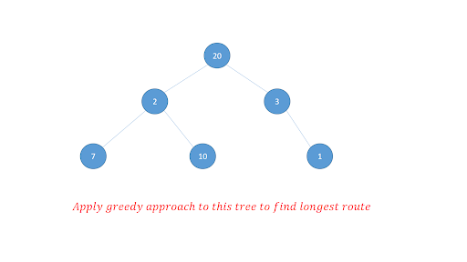
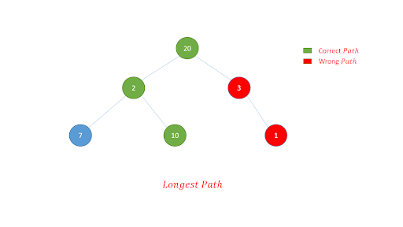

Greedy Algorithm
A greedy algorithm is an approach for solving a problem by selecting the best option available at the moment.
It doesn’t worry whether the current best result will bring the overall optimal result.
- Actually, it is not an algorithm, it is a technique.
This algorithm may not produce the best result for all the problems. It’s because it always goes for the local best choice to produce the global best result.
However, we can determine if the algorithm can be used with any problem if the problem has the following properties.
1. Greedy choice property: If an optimal solution to the problem can be found by choosing the best choice at each step without considering the previous steps once chosen. The problem can be solved using a greedy approach. This Property is called greedy choice property.
2. Optimal substructure: If the optimal overall solution to the problem corresponds to the optimal solution to its subproblems, then the problem can be solved using a greedy approach. This property is called optimal substructure.
Greedy algorithms have some advantages and disadvantages:
1. It is quite easy to come up with a greedy algorithm (or even multiple greedy algorithms) for a problem.
2. Analyzing the run time for greedy algorithms will generally be much easier than for other techniques (like Divide and conquer). For the Divide and conquer technique, it is not clear whether the technique is fast or slow. This is because at each level of recursion the size gets smaller and the number of sub-problem increases.
3. The difficult past is that for greedy algorithms you have to work much harder to understand correctness issues. Even with the correct algorithm, it is hard to prove why it is correct. Proving that a greedy algorithm is correct is more of an art than science. It involves a lot of creativity.
Note: Most Greedy algorithms are not correct.
As mentioned earlier, the greedy algorithm doesn't always produce the optimal solution. This is the major disadvantage of the algorithm.
For example, suppose we want to find the longest path in the graph below from root to leaf. Let's use the greedy algorithm here.

Greedy Approach
1. Let's start with the root node 20. The weight of the right child is 3 and the weight of the left child is 2.
2. Our problem is to find the largest path. And, the optimal solution at the moment is 3. So, the greedy algorithm will choose 3.
3. Finally the weight of an only child of 3 is 1. This gives us our final result 20 + 3 + 1 = 24.
However, it is not the optimal solution. There is another path that carries more weight (20 + 2 + 10 = 32) as shown in the image below.

Watch the video for understande more-